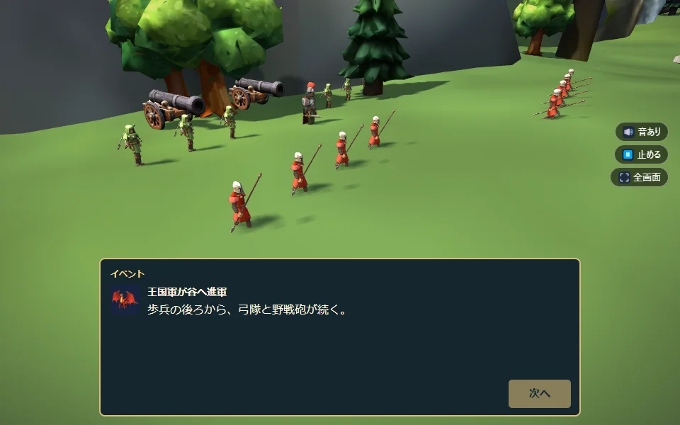
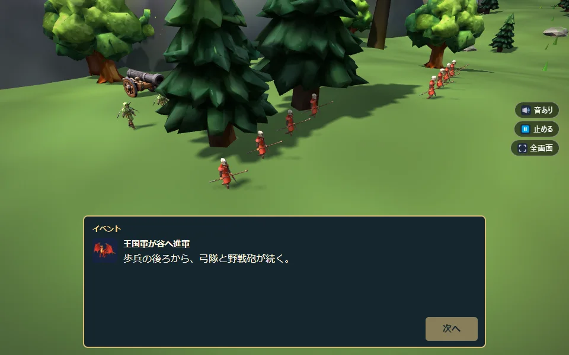
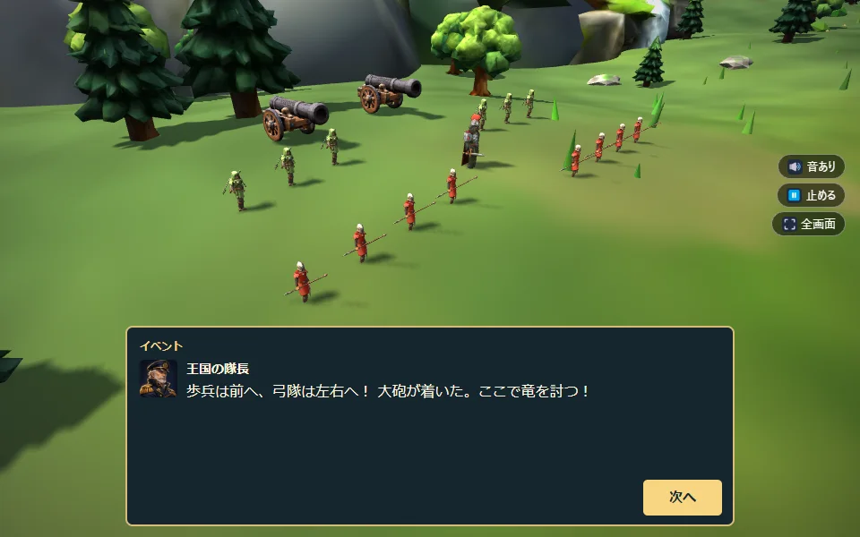
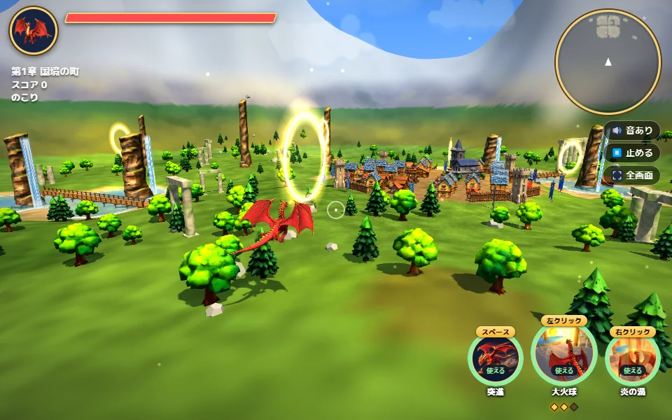
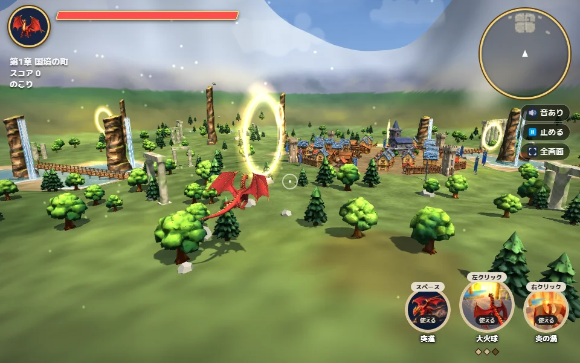
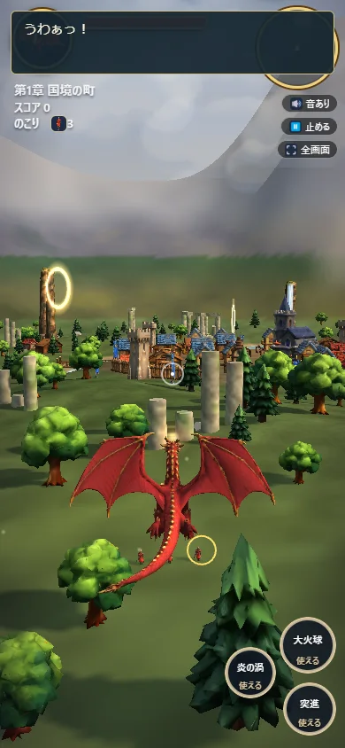
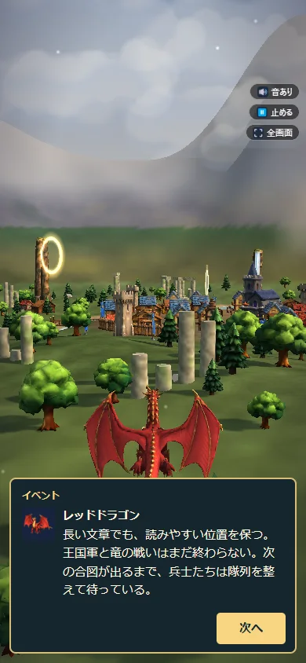
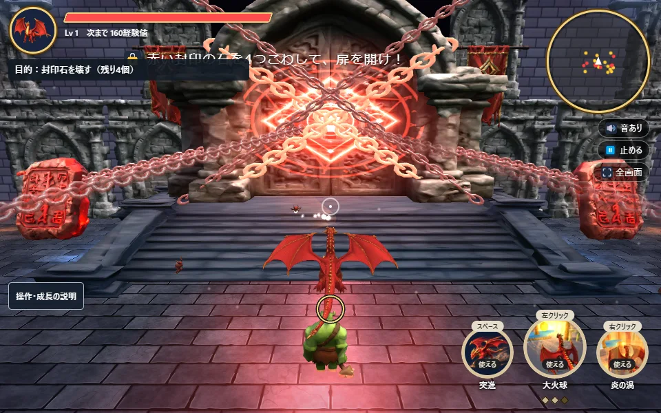
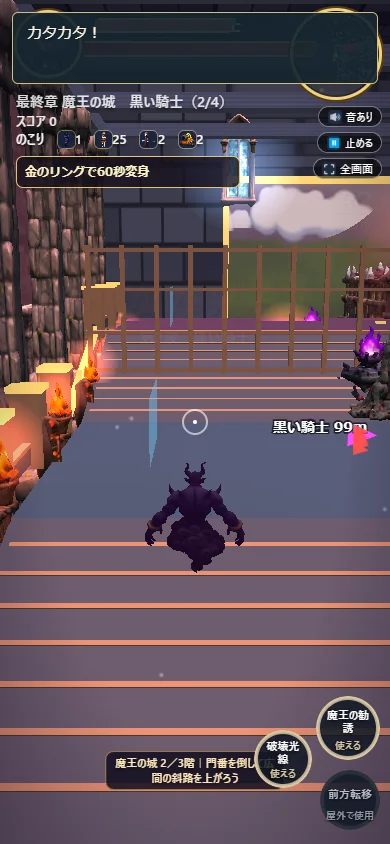
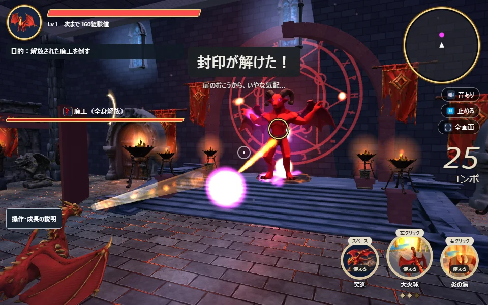

戦う手応えを整え、
会話と魔王城を見やすく
7件の修正を統合しました。敵が反撃できる耐久、王国軍の隊列、固定した会話枠、広い城内と壁を避ける視点を確認しています。
止まった理由：検証中に、固定「次へ」の内部クリック遮断、保存した魔王討伐編の初期化順、会話後に残る演出表示、軍隊が会話枠に隠れる構図を見つけました。修正して再確認しています。外部の承認待ちはありません。
敵が反撃できる手応えへ
初心者の王国編で、通常の兵士や主要ボスの体力を戻しました。固定位置から実際の通常炎を当てた試験では、弓兵は約0.37秒から2.4秒へ延び、倒れる前に矢を放ちました。戦艦も複数回砲撃しています。模型や固定配置のため低いままだった盾兵・城壁の兵も、役割確定後に最低体力を補いました。ボスを倒しただけで残兵まで消える処理は外しました。初心者の王国編は主要ボス7種と台詞を残し、重複する部隊戦を13回から10回にまとめています。
通常の弓兵・戦艦の実炎比較に加え、実際の王国の生成経路を使った盾兵と固定弓兵を確認。模型・固定配置で低いまま残っていた兵は役割確定後に最低体力を補い、弱い射撃役の初動も調整。主要ボス、ダメージ、継続攻撃間隔を保持。全強化状態の比較ではない。
王国編の通し計測：7分5秒。初心者・レッドドラゴンの通し試験。最初の戦闘から412.8秒、紙芝居開始から424.9秒。固定Nextを短い読書間隔で送り、通常キーだけの自動操縦で計測した仮想ゲーム時間。読む速さや操作で変わります。前版と会話送り・操縦条件が違うため単純な短縮率は出しません。演出表示の寿命修正を含む最終版で計測。UIと城も個別に検証済み。直前の試験から近接周回を避ける操縦へ改善しており、時間差すべてをゲーム調整の効果とは扱いません。 前版と同じ初戦基準では6分53秒、冒頭込みでは7分05秒です。前版の5分47秒は今回の値ではありません。
王国軍が隊列で谷へ入る
歩兵・弓兵・大砲・隊長を含む隊列が、時間差で歩いてきます。行軍を見た後に隊長の話が入り、操作を再開。軍隊を撃退すると洞窟へ進みます。






本編の勇者一行→緑竜→17体の6隊行軍→隊長の会話→戦闘→洞窟、ワイバーン同行を確認。960/390幅の独立実描画でも隊列が会話枠の上に収まり、歩兵・弓兵・大砲が見えることを確認。
強い色と発光を控える
空と地面、木の葉の鮮やかさを抑えました。技ボタンの多色の縁取りや脈打つ光を減らし、勝利表示も小さく固定しました。谷に密集する草花の色と数も控えています。キャラの元の画像や、危険の色分けは維持しています。




町の変更前後を960/390幅で比較。谷専用の地面・草花を抑えた最終版は軍隊の実描画で確認。キャラ画像の変更なし。全場所・全エフェクトの再検査ではない。
話者が変わっても、枠と「次へ」は固定
PC幅と縦長幅のどちらでも、吹き出しと次への場所を確保しました。文字の拡大・揺れ・左右反転を止め、ボタンは一つの台詞ずつ送ります。




960/390幅。3台詞で同じ枠・次へ位置、文字が出そろった写真と固定寸法を確認。
日本語の長い台詞も枠に収める
文字がすべて表示された状態で検査しました。句読点を考慮して折り返し、縦長画面でも本文が枠の幅と高さに収まっています。
62文字の日本語を全文表示し、縦横が枠内に収まること、390幅で複数行になることを確認。全台詞の文面校正ではない。
操作とイベントを分ける
イベントでは移動・攻撃・敵や弾の進行を止めます。画面は「イベント」と会話用の次へに切り替わり、終了後に操作表示へ戻ります。短い戦闘中の掛け声は操作を止めません。
960/390幅で操作HUD切替、プレイヤー/敵/弾の停止、被弾抑止、一行送り、押しっぱなし解除、BTK終了、紙芝居を確認。行軍を含む通しは別項目。 演出中の表示寿命と、終了後に古い文字・黒帯が残らないことも対象確認。
魔王城の通路と視点を広くする
封印の間と三層の城で、見える通路と実際に動ける幅を合わせました。斜路と門も広げ、巨大化しても通れます。カメラは壁と閉じた門を避け、縦長画面ではさらに引きます。上下の狙いも保っています。






本編の封印の間と無双の三層城を960/390幅で検査。封印と開門、巨体の斜路通過、壁際・上下の狙い、魔王演出の最終フェーズから操作復帰、保存した魔王討伐編の再起動を確認。位置を固定した個別試験で、城全体を手動で通しクリアした記録ではない。
確認した範囲
実ゲームの処理を、一定の時計と自動入力で検証しました。写真は実際に3D描画した画面です。スマホは390px幅のブラウザー試験で、実機の速度測定ではありません。通し試験と、位置・体力などを固定する個別試験は区別しています。城・会話・行軍の確認後の追加変更は、初心者王国の出現数・配置・戦艦の巡航距離と、重複する部隊戦の統合と、模型違いの兵の最低体力・初動だけです。ほかの実装が同じことをバイト比較で確認し、王国は最終版で通し直しています。すべての敵・強化状態・台詞を今回読み直した記録ではありません。
対象版の照合値 · 会話と操作 · 実際の攻撃 · 盾兵・城壁弓の反撃 · 編成・最低体力 · 本編の進行 · 王国の時間 · 城と視点 · 色調 · 構文 · 最終調整の範囲 · 表示修正の範囲
担当の時間と使用量
11/19 01:08:21の本人修正依頼以降。前回の読取位置から差分集計し、前回作業と継承使用量を除外。担当セッションの区間で、待ちを含む。個別キャラへの按分ではない。キャッシュ入力は入力の内数で二重加算しない。 数値は次の取得時点まで。時間は秒へ四捨五入し、1時間以上は秒を省略して分表示です。並行担当の時間を合計して経過時間にしていません。
| 担当 | 開始 → 取得 | 経過 | 総量 | キャッシュ入力 | 非キャッシュ入力 | 出力 |
|---|---|---|---|---|---|---|
| 主担当・統合と検証 | 11/19 01:08:21 → 11/19 03:22:30 | 2時間14分 | 61,044,864 | 60,478,848 | 380,397 | 185,619 |
| Sol・会話と資料 | 11/19 01:10:31 → 11/19 03:15:08 | 2時間4分 | 27,656,380 | 26,574,208 | 988,177 | 93,995 |
| Luna・耐久と軍隊 | 11/19 01:10:44 → 11/19 03:10:14 | 1時間59分 | 43,558,348 | 43,213,824 | 261,427 | 83,097 |
| 素材担当・城と視点 | 11/19 01:10:55 → 11/19 02:23:09 | 1時間12分 | 41,166,717 | 40,796,800 | 301,818 | 68,099 |
総量＝キャッシュ入力＋非キャッシュ入力＋出力。キャッシュ入力は入力の内数です。項目別のトークンと時間は共通実装・統合試験を共有するため分離できずnull。担当総量を7項目へ重複配賦しません。取得範囲・根拠・読取位置
指示と確認の時刻
| 項目 | 本人の指示（JST） | 検証の終了（JST） |
|---|---|---|
| 敵の耐久 | 11/19 01:08:21 | 11/19 03:17:53 |
| 軍隊の行軍 | 11/19 01:08:21 | 11/19 02:06:04 |
| 色調 | 11/19 01:08:21 | 11/19 02:22:27 |
| 固定する会話 | 11/19 01:08:21 | 11/19 02:19:31 |
| 改行 | 11/19 01:08:21 | 11/19 02:19:31 |
| 操作の分離 | 11/19 01:08:21 | 11/19 02:19:31 |
| 城とカメラ | 11/19 01:09:05 | 11/19 02:22:07 |
指示時刻はアプリ記録の秒精度。検証の終了時刻と、担当の最終納品時刻は同じ意味ではありません。
担当の報告時刻
主担当・統合と検証：未取得（記録作成時点で継続中）
Sol・会話と資料：11/19 03:15:08
Luna・耐久と軍隊：11/19 03:10:14
素材担当・城と視点：11/19 02:23:09
検査ごとの待ち時間・実行時間・再試行理由
| 番号・検査 | キュー待ち | 実行 | 結果・再試行理由 |
|---|---|---|---|
| 340 / readable_palette_1119 | 2分34秒 | 0分36秒 | done。再試行理由なし。詳細は当該結果とログ参照。 |
| 341 / readable_event_1119 | 0分1秒 | 0分9秒 | failed。固定Nextの内部storyGoクリックも遮断したため、本体を修正。 |
| 342 / readable_castle_1119 | 0分1秒 | 0分10秒 | failed。試験で敵を一斉除去後に通常フレームを回さず、扉が開き切る前に判定した。検査器を修正。 |
| 343 / readable_combat_1119 | 0分1秒 | 0分19秒 | done。再試行理由なし。詳細は当該結果とログ参照。 |
| 344 / readable_event_retry_1119 | 0分1秒 | 0分12秒 | done。再試行理由なし。詳細は当該結果とログ参照。 |
| 345 / readable_army_route_1119 | 0分1秒 | 1分18秒 | failed。旧試験が旧紙芝居ボタンで進めようとしたため、新しいNextに対応。 |
| 346 / readable_castle_retry_1119 | 1分1秒 | 0分14秒 | done。再試行理由なし。詳細は当該結果とログ参照。 |
| 347 / readable_ui_visual_1119 | 0分1秒 | 0分44秒 | done。再試行理由なし。詳細は当該結果とログ参照。 |
| 348 / readable_castle_final_1119 | 0分1秒 | 1分42秒 | failed。保存SC4の起動順に既存不具合を発見。岩の初期化を修正し、保存起動も再確認へ。 |
| 349 / readable_army_retry_1119 | 1分29秒 | 3分0秒 | failed。進行は通ったが、既存の汎用台詞混入で行軍途中の写真が欠落。軍隊の波だけ台詞と構図を修正。 |
| 350 / readable_kingdom_time_1119 | 4分13秒 | 7分28秒 | failed。自動操縦が最後の兵士を狙えず120秒以上周回。途中記録を保存して停止、通常の減速キーを使う操縦へ修正。 |
| 352 / readable_march_visual_1119 | 7分23秒 | 0分24秒 | done。画角内の検査は合格したが、目視で兵が小さいため隊列を詰め、低い視点へ変更。 |
| 353 / readable_castle_complete_1119 | 7分27秒 | 0分23秒 | failed。魔王演出の真正通しで、試験の打撃量と時間窓が不足。通常のhitEnemyと待ち時間の検査器を修正。 |
| 354 / readable_event_final_1119 | 1分55秒 | 0分22秒 | done。再試行理由なし。詳細は当該結果とログ参照。 |
| 355 / readable_final_route_1119 | 未取得 | 実行前・実行中 | cancelled。未開始で取消。軍隊の見え方を改善した版を357へ統合して検証するため。 |
| 357 / readable_integrated_final_1119 | 5分30秒 | 1分3秒 | failed。軍隊の構図は合格。城の試験で演出開始の実時間待ちが不足したため検査器を修正。 |
| 359 / readable_flow_final_1119 | 3分11秒 | 11分24秒 | failed。王国の自動操縦が複数敵の周囲を旋回し続けたため途中停止して操縦条件を修正。城の検査器も実際の巨兵→魔王の順へ修正。 |
| 361 / readable_display_finish_1119 | 7分42秒 | 1分18秒 | failed。両城の4条件中3条件が合格。スマホ幅の二門目で巨兵と衝突したため、試験の進入路を通路右側へ変更して362で再確認。 |
| 362 / readable_remaining_1119 | 0分2秒 | 7分51秒 | failed。城の残1条件と行軍は合格。王国もクリアしたが紙芝居込み8分26秒で目安を超えたため公開資料の確定を停止。敵の体力を維持し、初心者王国の同型増員と離れた配置を追加調整。 |
| 363 / readable_pacing_finish_1119 | 0分1秒 | 6分35秒 | failed。王国はクリアし紙芝居込み7分48秒。都市の初波は短縮したが、港で戦艦が距離130の旋回点へ離れ続ける追跡時間が残った。初心者だけ深水の近い出現位置と巡航距離、追加増員を調整して再計測。 |
| 364 / readable_pacing_sea_1119 | 0分1秒 | 6分37秒 | failed。王国は紙芝居込み8分1秒でクリア。敵を弱くする追加変更はせず、自動操縦の近接周回と不要な上昇・早すぎる減速を調査。通常入力だけの操縦改善を別条件として次の計測に分離。 |
| 365 / readable_pacing_inputs_1119 | 0分1秒 | 6分24秒 | failed。通常入力の操縦を改善して7分34秒でクリア。なお目安を超えたため、主要ボス7種と登場台詞を保ち、初心者だけ重複部隊3戦を前の戦闘へ統合して13→10戦へ。体力と最終到達を次の通しで確認。 |
| 366 / readable_ten_waves_1119 | 0分1秒 | 5分28秒 | failed。10戦版は会話込み6分34秒でクリア。ただし実際の生成記録で、模型付き盾兵や固定弓兵などが旧来の低い体力のままと判明。役割確定後の最低体力と初動を補い、反撃の実炎試験を追加。 |
| 367 / readable_durable_final_1119 | 0分1秒 | 6分30秒 | failed。全10戦と盾兵・固定弓の実炎/反撃、騎士/ボス比較は合格。初戦から6分53秒、冒頭込み7分05秒。資料の閾値を一時的に冒頭込みへ厳格化していたため確定処理だけ停止。前版と同じ初戦基準にそろえ、両時間を明記して資料を再生成。ゲーム再試験の失敗ではない。 |
| 368 / readable_report_1119 | 0分1秒 | 0分2秒 | failed。Edgeの自動起動が直後に終了し、表示検査に入る前に停止。原因未特定。Chromeで同じ資料を表示確認し、確認済み資料は通常のEdgeで開く。 |
| 369 / readable_report_chrome_1119 | 0分1秒 | 0分16秒 | done。再試行理由なし。詳細は当該結果とログ参照。 |